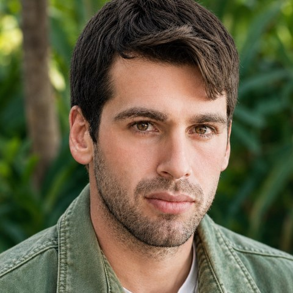
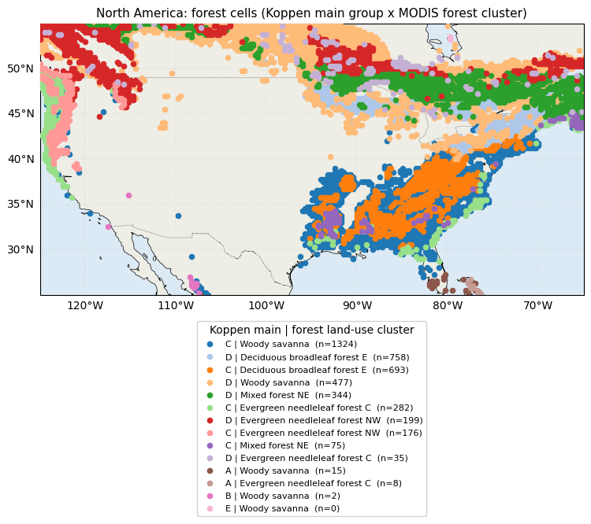
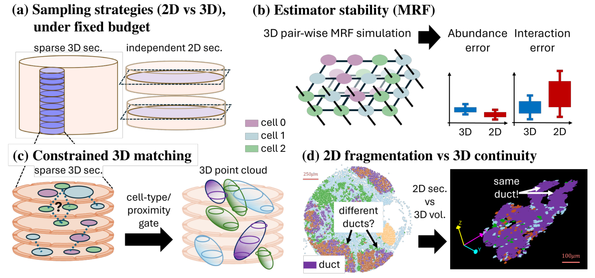
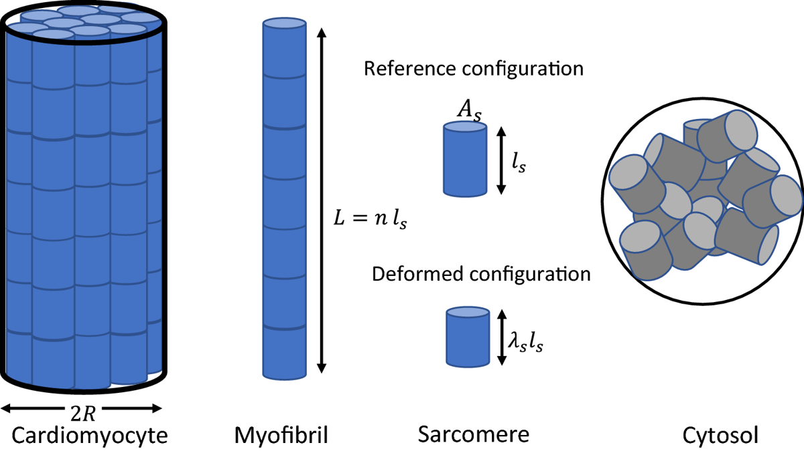

Ido Harlev
PhD · Computational Biology · Weizmann Institute & NASA Goddard
I am a geospatial data scientist working with high-resolution, multiplexed spatial data. My path runs from the mechanics of soft materials, through 3D spatial analysis of tissue, to Earth-system science. The question stays the same: how do you recover real structure from spatially sampled, multi-layer measurements?
Earth–plant–climate
Geospatial data science for forests and climate
Stacking imaging spectroscopy, satellite time series, climate and land-use layers into reproducible pipelines, and using machine learning to study vegetation, climate interactions and ecosystem resilience.

Cancer & spatial proteomics
3D tissue reconstruction from multiplexed images
One 2D section recovers global cell-type abundance well, but local statistics such as clustering and cell–cell interactions vary widely. I built a module that links cells across serial sections and recovers 3D structure under a fixed imaging budget.

Harlev I., Oukhanov T., Ben-Uri R., Keren L., Bagon S. Sampling-Aware 3D Spatial Analysis in Multiplexed Imaging. CVPR 2026 Workshops (CVMI). arXiv · CVF
Best Poster, Breaking New Methodologies in Biomedical Research, Weizmann Institute, 2025.
Materials science
Mechanics and remodeling of cardiomyocytes
A thermodynamics-based model of how heart muscle cells remodel under mechanical and hormonal cues. Boundary conditions strongly shape the response, which may help explain how eccentric and concentric hypertrophy differ.

Harlev I., Holmes J.W., Cohen N. The influence of boundary conditions and protein availability on the remodeling of cardiomyocytes. Biomechanics and Modeling in Mechanobiology 21(1), 189–201, 2022. DOI
Education. PhD Computational Biology, Weizmann Institute & NASA Goddard · MSc Bioinformatics, Weizmann Institute · BSc Materials Engineering and Physics, Technion